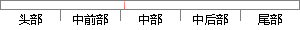

如果低字节的数小于等于0，则新生成的数为高字节的数的绝对值乘256加上低字节的数的绝对值加上128的负数， ；
片段位置图

相似结果|
相似片段 1：然后，将系数存入单片机存储单元当中，进行双字节的乘除和加减。对数据的处理包括：负数——变为负数的绝对值加上128(例如：一1．0存入单片机的两个相邻单元，第一个单元存1+128：129，第二个单元存
|
※ 片段修改建议 ※
近似词参考：- 如果：若是 假如 要是
- 等于：即是
- 新生：复活
- 生成：天生
- 加上：加之
- 加上：加之
系统自动生成语句：若是低字节的数小于即是0，则复活成的数为高字节的数的绝对值乘256加之低字节的数的绝对值加之128的负数， ；
注：本片段修改建议为系统自动生成，仅供参考。